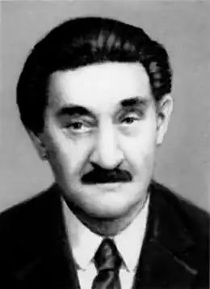
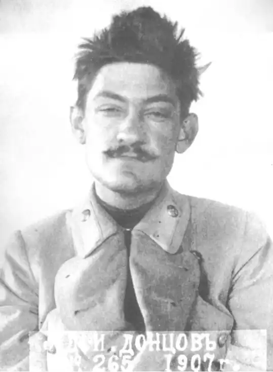

Хоча Донцов жив у відносно недавньому минулому, відомо про нього надзвичайно мало, і те, що відомо, містить багато суперечностей. Ми подаємо найбільш вірогідні, на нашу думку, відомості, і відзначаємо, що написання наукової документованої біографії Донцова є справою майбутнього.
Д.І.Донцов народився 17 (29) серпня 1883 р. у Мелітополі. Дата 30 серпня (н.с.) – результат арифметичної помилки (в 19 ст. різниця між юліанським і григоріанським стилями становила 12 днів, не 13, як нині). Дата 10 вересня (н.с.) – також результат непорозуміння, коли дату 29 серпня григоріанського стилю було прийнято за дату юліанського стилю і ще раз "переведено" на григоріанський стиль.
Батьки його – Іван (по-батькові його нам невідоме) (1840 – 1894) та Єфросина Йосифівна (1856 – 1895) були дворянами. Родина була досить заможною, мала 1500 десятин землі та підприємство з продажу сільськогосподарських машин в Мелітополі. Дмитро був середнім з п’яти дітей; його старший брат і сестра стали росіянами, брали участь в російському соціал-демократичному русі; натомість молодші брат і сестра слідом за Дмитром стали українцями. Але ні імен їх, ані дат життя ми не знаємо. Дмитро закінчив реальне училище в Мелітополі і в 1900 р. переїхав до Царського Села (біля Санктпетербургу), де закінчив середню освіту (ми не знаємо, який саме заклад). Пізніше (коли саме – невідомо) він поступив на юридичний факультет Санктпетербурзького університету, зблизився з українською громадою. Вже в цей час він захопився творчістю Лесі Українки, якій пізніше присвятив книгу і кілька статей. В 1905 – 1907 рр. він брав участь в діяльності Санктпетербурзької групи Української соціал-демократичної робітничої партії (УСДРП). Восени (десь 18 жовтня) 1905 р. Донцов виступив з промовою на українському політичному вічу в Санктпетербурзі; за це його заарештовано і перевезено до Києва до Лук’янівської тюрми. Звільнено його без суду за загальною амністією. В листопаді 1905 р. Донцов поїхав до Санктпетербургу, а в січні 1906 р. повернувся до Києва і включився в роботу УСДРП. На початку 1907 р. Донцов в Санктпетербурзі бере участь у редагуванні газети "Наша дума" (орган української фракції 2-ї думи, вийшло 2 номери). В 1907 р. під час перебування Донцова в Києві його заарештували вдруге; як члену Київського комітету УСДРП йому загрожувала 4-річна каторга. Після 8 місяців Лук’янівської тюрми його випущено на поруки (заходами брата і сестри). Він нелегально виїхав до Галичини. Точні дати цих арештів і звільнень лишаються для нас невідомими. 12.04.1908 р. Донцов прибув до Львова. В 1908-9 рр. лікувався у Закопане, де ближче познайомився з В.Липинським. В 1909 – 1911 рр. він прослухав 4 семестри юридичного факультету Віденського університету. Там в 1909 р. він познайомився з Марією Михайлівною Бачинською, з якою оженився 27.05.1912 р. З 1911 р. Донцов жив у Львові, виступав в українській пресі як публіцист. В 1913 р. Донцов через ідейні розходження в національному питанні полишає лави УСДРП. З початком 1-ї світової війни, 4.08.1914 р. Донцов став на чолі новоствореного Союзу визволення України (Львів). Оскільки російська влада, як ми бачили вище, любила заарештовувати Донцова і віддівалась цій захоплюючій політичній грі при кожній нагоді, Донцов (як і інші члени СВУ) змушений був перед наступом російських військ на Галичину переїхати до Відня. В кінці 1914 р. Донцов відійшов від керівництва СВУ і переїхав з дружиною до Берліна, де очолив Українську інформаційну службу. Робота на полі політичного інформування про Україну стала для нього основною на наступні 6 років. В Берліні він перебував до 1916 р., на недовгий час виїздив до Швеції. В 1916 р. Донцов переїхав до Берна (Швейцарія) і очолив Бюро національностей Росії, котре займалося поширенням інформації з відповідної проблеми. В кінці березня 1917 р. Донцов переїхав до Львова, де нарешті закінчив навчання, отримавши ступінь доктора прав у Львівському університеті. Але як юрист він, здається, ніколи не працював. Десь в березні 1918 р. (точна дата нам невідома) Донцов переїхав до Києва, включився в роботу Української партії хліборобів-демократів, з 24 травня 1918 р. очолював Бюро преси та Українське телеграфічне агентство при гетьманському уряді. Ця партія загалом підтримувала гетьманський переворот, але не мала на П.Скоропадського сильного впливу. Після виголошення федеративної грамоти гетьмана (14.11.1918 р.) Донцов вважав свої стосунки з гетьманом зірваними. 25.11.1918 р. Донцов опублікував статтю із засудженням політики гетьмана; після неї він мусив ховатись в Києві від білогвардійців, бо ініціатива в політичній грі "Заарештуй Донцова" перейшла саме до них. Після звільнення Києва Донцову довелось ховатись вже від Директорії. За допомогою Є.Коновальця та С.Петлюри Донцов дістав доручення в дипломатичну місію і 13.01.1919 р. виїхав з Києва до Відня. В середині лютого 1919 р. Донцов переїхав до Берна, де керував пресово-інформаційним відділом українського представництва в Швейцарії. Після ліквідації українських дипломатичних місій в лютому 1921 р. Донцов переїхав до Відня. В січні 1922 р. він дістав дозвіл польської влади на переїзд до Львова. Тут він жив аж до вересня 1939 р. У Львові Донцов за ініціативою Є.Коновальця був призначений головним редактором "Літературно-наукового вісника" (ЛНВ) – славного українського часопису, заснованого в 1898 р., вихід якого був припинився в 1919 р. Донцов відродив журнал і провадив його до 1932 року. Паралельно Донцов був редактором журналу "Заграва" (1.04.1923 – 1924 рр.). На базі "Заграви" він хотів утворити націоналістичну організацію (Партію народної роботи – вже четверту з ряду політичну організацію, в якій він брав участь), але це не повелось, і Донцов назавжди полишив спроби практичної політики. З кінцем 1932 року видання ЛНВ через фінансові труднощі припинилось. Донцов прийняв сміливе рішення продовжити видання журналу в якості свого приватного підприємства і зумів зробити його прибутковим. "Вісник літератури, політики і науки" (або спрощено "Вісник") виходив у Львові в 1933 – 1939 рр. У самому кінці серпня 1939 р. встиг вийти 9-й номер "Вісника", який виявився останнім. 1.09.1939 р., у перший день німецько-польської війни (яка дуже скоро переросла у 2-у світову війну) польська поліція згадала, що вона теж любить заарештовувати Донцова. Поляки запроторили його у концтабір Береза Картузька, де він перебував до падіння Польської держави. Вийшовши з ув’язнення, Донцов через Данціг прибув до Берліна, де перебував до літа 1940 р. В Берліні український емігрант А.Севрюк подан на нього донос до гестапо за "полонофільство Донцова". Гестапо – проти всіх сподівань – не схотіло приєднатись до міжнародних змагань з арештування Донцова. Після з’ясування справи Донцов переїхав до Бухареста, де жив до середини 1941 р. З початком радянсько-німецької війни Донцов повернувся до Берліна, а потім переїхав до Праги, де працював в німецькій установі з дослідження східної Європи (конкретна назва цієї установи нам не відома). На рубежі 1943-44 рр. Донцов востаннє побував у Львові. Після кінця 2-ї світової війни Донцов перебував в американській окупаційній зоні в Німеччині, а потім – в Парижі (кін. 1945 – 1 пол. 1946 рр.). Більшовики внесли свій свіжий струмінь у полювання на Донцова: вони записали його у список "воєнних злочинців" і намагались схопити його. Насправді Донцов за всю війну не зробив жодного пострілу і, здається, за все життя ніколи не тримав гвинтівки в руках. Натомість він тримав в руках перо, яке під командою розумної голови весь час викривало агресивну, загарбницьку політику Москви проти України і всього світу. Але це не тільки не виправдовувало Донцова в очах більшовиків, а навпаки, поглиблювало його провину. Побоюючись видачі в руки совітів, Донцов переїхав до Великобританії, а в недовгому часі – до США. З 1947 року і до смерті він жив у Канаді (точні дати цих переїздів нам не відомі). В 1949 – 1952 рр. Донцов викладав українську літературу в Монреальському університеті. В цей час він співпрацював з численними українськими виданнями у вільному світі, написав і надрукував багато публіцистичних і літературознавчих праць, але не мав сталих обов’язків. Спроби налагодити співпрацю з Організацією українських націоналістів на еміграції, проекти заснування окремого журналу, де б Донцов був головним редактором, не вдалися. Дмитро Донцов помер 30.03.1973 р. Поховано його на українському цвинтарі в Баунд Бруку (США). Ідейний розвиток Доля судила Донцову довгий життєвий шлях: на полі української публіцистики він працював безмаль 65 років. Світ за цей час сильно змінився, змінювались і погляди Донцова. В загальних рисах можна виділити три етапи його ідейної біографії. Перший з них – соціал-демократичний (до 1913 року). В цей час молодий публіцист плине фарватером ідейних течій своєї доби, студіює й популяризує Маркса та Енгельса і навіть… викриває "українських буржуазних націоналістів" (під якими він розумів власне представників ліберального, поміркованого українства). Другий етап – націоналістичний – почався в 1913 році і тривав десь до 1939 року (умовно кажучи, до кінця "Вісника"). В 1913 році Донцов круто перекладає кермо своєї долі, виголосивши промову (надруковану брошурою) за здобуття Україною незалежності. У творах цього періоду (який є найпліднішим і найважливішим в житті Донцова) вирішальною рушійною силою історичного процесу виступає не боротьба класів, але націоналізм, незломна воля нації до буття та самореалізації. Третій етап, для якого важко підібрати чітке окреслення (умовно можна назвати його містичним) тривав десь з 1939 року до кінця життя Донцова. Не заперечуючи відверто виголошених в попередньому періоді засад, Донцов все більше уваги почав приділяти проблемам духовного розвитку, вбачаючи в поступі духу джерело суспільних і політичних змін. Але протягом всього життя нашого українського Макіавеллі його провідною зорею була незалежна українська держава і боротьба проти Росії як головного ворога нашої незалежності. За своє довге життя Донцов був знайомий з цілою масою українських політичних, громадських, культурних діячів, мав серед них багато палких прихильників і ще більше – запеклих ворогів.